需求：在指定的节假日，需要给平台所有用户发送祝福的短信
xxl-job-demo.sql脚本完成数据初始化。（脚本）xxl-job-demo<!--mybatis依赖-->
<dependency>
<groupId>org.mybatis.spring.boot</groupId>
<artifactId>mybatis-spring-boot-starter</artifactId>
<version>3.0.4</version>
</dependency>
<!--mysql依赖-->
<dependency>
<groupId>com.mysql</groupId>
<artifactId>mysql-connector-j</artifactId>
<scope>runtime</scope>
</dependency>
<!--lombok依赖-->
<dependency>
<groupId>org.projectlombok</groupId>
<artifactId>lombok</artifactId>
<optional>true</optional>
</dependency>
spring.datasource.type=com.zaxxer.hikari.HikariDataSource
spring.datasource.driver-class-name=com.mysql.cj.jdbc.Driver
spring.datasource.url=jdbc:mysql://localhost:3306/xxl_job_demo
spring.datasource.username=root
spring.datasource.password=123456
import lombok.Data;
@Data
public class UserMobilePlan {
// 主键
private Long id;
// 用户名
private String username;
// 昵称
private String nickname;
// 手机号码
private String phone;
// 备注
private String info;
}
package com.laodu.xxljobdemo.mapper;
import com.laodu.xxljobdemo.model.po.UserMobilePlan;
import org.apache.ibatis.annotations.Select;
import java.util.List;
public interface UserMobilePlanMapper {
@Select("select * from t_user_mobile_plan")
List<UserMobilePlan> selectAll();
}
添加发送短信的任务：
package com.example.demo.job;
import com.example.demo.mapper.UserMobilePlanMapper;
import com.example.demo.po.UserMobilePlan;
import com.xxl.job.core.handler.annotation.XxlJob;
import lombok.RequiredArgsConstructor;
import org.springframework.stereotype.Component;
import java.util.Date;
import java.util.List;
import java.util.concurrent.TimeUnit;
@Component
@RequiredArgsConstructor
public class ChipXxlJob {
private final UserMobilePlanMapper userMobilePlanMapper;
@XxlJob("sendMsgHandler")
public void sendMsgHandler(){
List<UserMobilePlan> userMobilePlans = userMobilePlanMapper.selectAll();
System.out.println("任务开始时间：" + new Date() + "，要处理的任务数量：" + userMobilePlans.size());
long begin = System.currentTimeMillis();
userMobilePlans.forEach(item -> {
try {
// 模拟发送短信的动作
TimeUnit.MICROSECONDS.sleep(10);
} catch (InterruptedException e) {
throw new RuntimeException(e);
}
});
System.out.println("任务结束时间：" + new Date());
long end = System.currentTimeMillis();
System.out.println("任务耗时：" + (end - begin) + "毫秒");
}
}
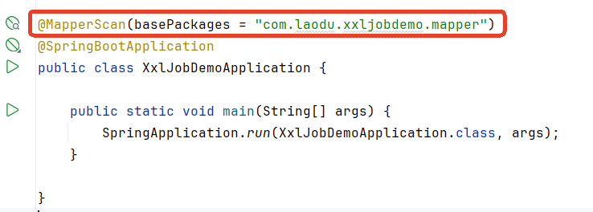
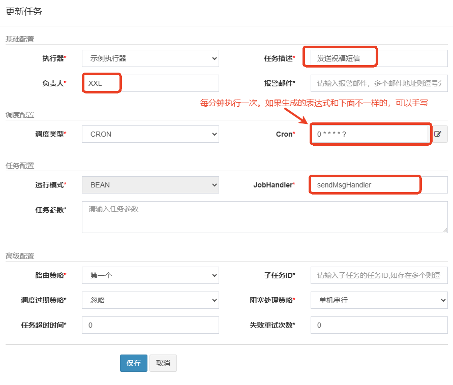
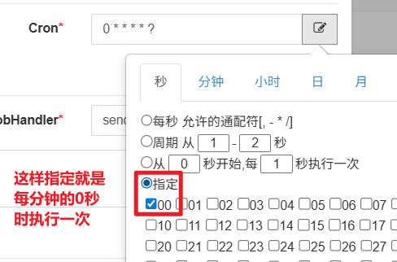
启动任务，执行效果：
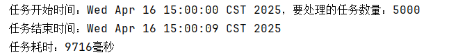
我们上面说到路由策略，其中有一个路由策略叫做分片广播。
分片广播：让所有机器一起干同一个活，各自分一小块任务。
目的是提升效率，我们上面实现的功能是单机方式完成功能，耗时在10s左右。我们可以使用分片广播方式来提升效率。
在分片广播方面涉及到两个概念：
并且在Java程序中，是可以通过以下代码来获取分片总数和分片索引的：
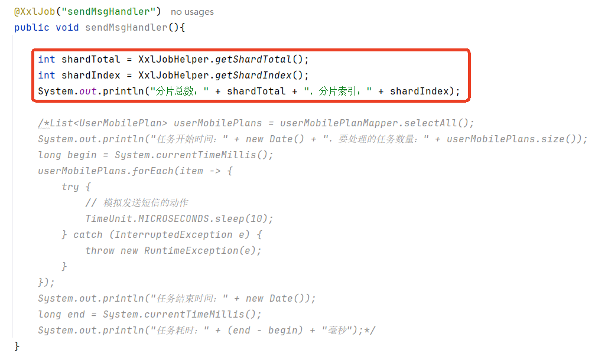
编写了以上的代码之后，在调度中心将任务的路由策略修改为：分片广播
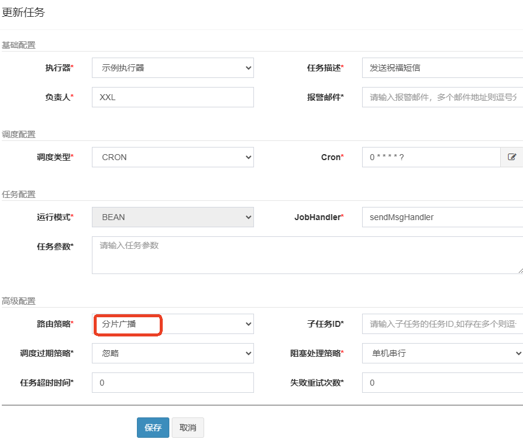
然后启动任务，查看后台输出，可以看到分片总数以及分片索引：
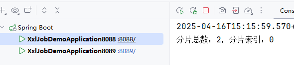
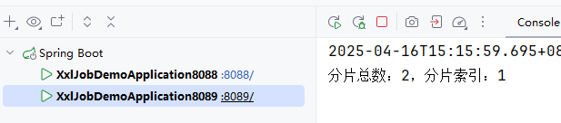
我们可以通过分片总数和分片索引来完成分片执行，对应的SQL语句如下：
select * from t_user_mobile_plan where mod(id, 分片总数) = 分片索引;
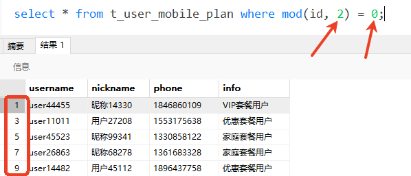
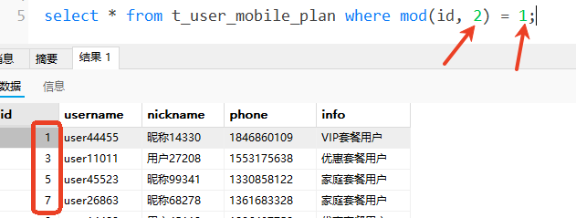
这样的话，数据就可以平均分配到不同的机器上执行。
接下来，我们编写代码来实现一下：
首先，要在mapper中添加一个方法，如下：
@Select("select * from t_user_mobile_plan where mod(id, #{shardTotal}) = #{shardIndex}")
List<UserMobilePlan> selectByMod(@Param("shardIndex") int shardIndex, @Param("shardTotal") int shardTotal);
然后再重新编写任务代码：
@XxlJob("sendMsgHandler")
public void sendMsgHandler(){
// 分片总数
int shardTotal = XxlJobHelper.getShardTotal();
// 分片索引
int shardIndex = XxlJobHelper.getShardIndex();
// 查询数据
List<UserMobilePlan> userMobilePlans = null;
if(shardTotal == 1) {
userMobilePlans = userMobilePlanMapper.selectAll();
}else{
userMobilePlans = userMobilePlanMapper.selectByMod(shardIndex, shardTotal);
}
// 处理数据
System.out.println("开始执行任务时间：" + new Date() + "，需要处理的数据总量：" + userMobilePlans.size());
long begin = System.currentTimeMillis();
userMobilePlans.forEach(item -> {
try {
TimeUnit.MICROSECONDS.sleep(10);
} catch (InterruptedException e) {
throw new RuntimeException(e);
}
});
System.out.println("结束执行任务时间：" + new Date());
long end = System.currentTimeMillis();
System.out.println("处理任务总耗时" + (end - begin) + "毫秒");
}
然后启动任务，查看控制台是否为分片执行：
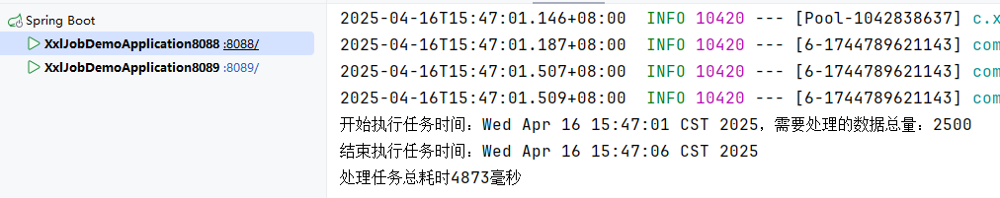
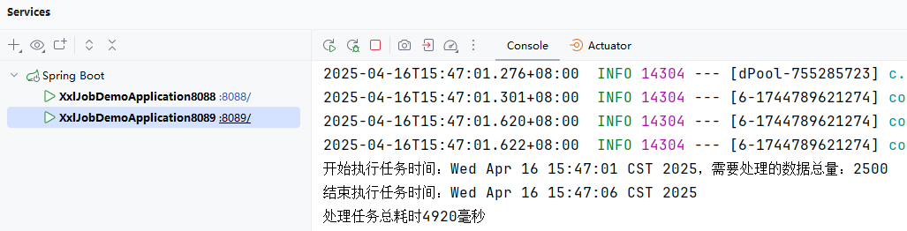
经过测试，效率翻倍，处理5000条记录，总耗时5秒左右。